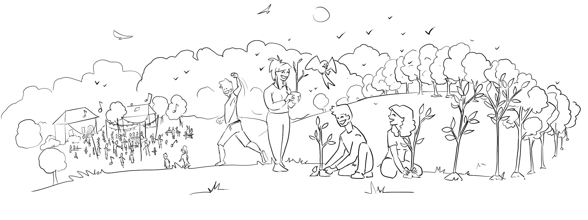

Créer du lien autour d'un projet commun 🤝
Une coopérative citoyenne rassemble des personnes autour d'un projet commun qu'elles contribuent à financer, à faire vivre et à orienter démocratiquement.
Nous souhaitons faire de la ferme un lieu ouvert aux habitants : pour acheter des produits locaux, se rencontrer, se balader ou se détendre. Des plaisirs simples qui font vivre le lien local. Guinguettes, fêtes du solstice, conférences et débats pourront aussi rythmer la vie de la ferme. Pour leur donner vie, nous aurons besoin de vous !
Un financement collectif pour des bases solides 📈
En prenant une part dans la coopérative, vous contribuez à financer le démarrage du projet et l'acquisition d'infrastructures et d'outils de qualité.
Cet investissement collectif permet de réduire la pression financière et le risque portés par les seuls agriculteurs, et de donner à la ferme des bases plus solides pour durer. Cette étape est essentielle à la viabilité de notre projet.
Devenir un mangeur acteur du projet 🌾
Nous voulons aller au-delà de la relation classique entre producteur et consommateur.
Devenir coopérateur, ce n'est pas seulement acheter des produits : c'est prendre part à un projet agricole local, soutenir son développement et contribuer à son avenir. C'est aussi participer aux assemblées générales pour suivre les avancées du collectif et exercer son droit de vote.
Mettre ses talents au service du collectif 🛠️
Nous envisageons de créer des comités autour de différentes thématiques : événements et fêtes, communication, finances...
Coopérateurs et sympathisants pourraient y partager leurs compétences et leurs envies. Cette proposition reste à construire ensemble : nous recueillerons votre avis à l'aide d'un questionnaire !
Faire vivre un projet qui nous dépasse 🌍
Une ferme soutenue par les habitants de son territoire s'appuie sur une communauté qui souhaite la voir vivre, évoluer et durer.
Notre ambition est de construire un projet qui dépasse ses seuls fondateurs et s'inscrive dans la vie locale pour les générations à venir.